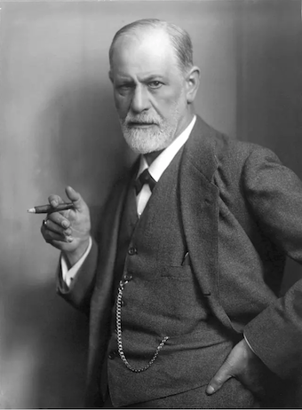

Below, I present you with a glossary containing what I think are the most important terms to know for reading Sigmund Freud.

As you probably know if you’re reading this, Freud is the father of psychoanalysis. He is rarely taught in university psychology programs these days, which I think is a total shame. In my experience, whenever Freud’s work is taught, it is always using the same two PowerPoint slides, one of which lists the psychic defence mechanisms (most of which were actually defined by his daughter, Anna Freud) and the other slide shows a horrible graphic that visualizes the Id, Ego, and Superego using an iceberg. Oddly enough, when I’ve gone looking for a citation for the information on these PowerPoint slides, I have been led back to a textbook, which just cites another textbook, which just cites another textbook. So, it looks like the authors of current psychology textbooks actually haven’t read Freud, but instead just copy and paste what other textbooks say about him.
I think if you want to know anything about the history and philosophy of psychology you have to read about it for yourself, because most psychologists and neuroscientists don’t give a damn about the topic and dismiss it unfairly as evidenced by how they treat Freud. A friend and I tried to teach psychoanalysis by forming a psychoanalysis book club last year in the psychology department. My original version of this glossary (which was quite messy) was a useful reference tool.
The pages cited here are from the Penguin Modern Classics 2003 edition of Freud’s An Outline of Psychoanalysis. This book, along with Freud’s masterpiece Civilization and its Discontents (which is absolutely necessary to read if you want to understand anything about literature or political theory from the 20th century) make for a fantastic introduction to psychoanalytic theory.
I hope this is helpful to you. I’ve attached the citation for the Penguin edition of the Outline here:
Freud, S. (2003). An Outline of Psychoanalysis. Penguin Group.
Id: The most archaic, animal-like part of the psyche that fundamentally seeks pleasure (177-178).
Ego: The young part of the psyche that is the foundation of the conscious self. Mediates between the internal world of drives (the Id), the external world (social life, nature) and the internalized world of moral and social authority (the Superego) (176).
Superego: The psychic representation of the limitations of the external social and moral world. The Superego is formed when the child identifies with the moral and social norms of authority figures such as parents (177).
Conscious: Everything in the state of awareness. This includes many of the contents of the Ego, though not all parts of the Ego are conscious. Conscious contents are derived from preconscious contents (186).
Preconscious: Information in the psyche that can be accessed and brought into consciousness. The deeper levels of the Ego are preconscious (190).
Unconscious: The contents of the psyche that are inaccessible to conscious awareness. The contents of the Id are unconscious (191).
Primary Processes: Any and all processes occurring in the unconscious Id (192).
Secondary Processes: Any and all processes occurring in the preconscious Ego (192).
Drives: The forces behind psychic tensions that are caused by the needs of the Id. Freud says “They represent the physical demands on the psyche” (178).
Drive Conservatism: Drives are fundamentally conservative – they are an attempt to return to a previous state of being (178).
Eros (life drive): The drive to bind and unify things associated with love (179).
Self-Preservation Drive: The drive to persist; to survive as an individual (179).
Species-Preservation Drive: The drive to keep other members of the species alive (179).
Thanatos (death drive): The death-drive – the drive to destroy and dissolve things (179).
Castration Anxiety: A fear inflicted on the young boy by the trauma of being threatened by his father to be castrated (218).
Electra Complex: Girls in the phallic stage experience penis envy and rebel against the mother. They love their father, for he has a penis and the desire for a baby is put onto this desire for a penis which turns into a love for the father (222).
Erogenous Zones: The somatic sources of libido. I.e., the somatic sources of pleasure, and therefore the somatic sources of the energy to seek unifying pleasure (181).
Fixation: When the libido gets ‘stuck’ on an erogenous zone due to a developmental failure in one of the psychosexual stages (184).
Infantile Amnesia: A forgetting/amnesia of the infant years and their sexual developments due to repression (182).
Libido: The energy of Eros (179).
Mobility: The psychical ease of passage of libido from the Ego to an object (180).
Narcissism: The initial state in which libido is only aimed inwards towards the Ego (180).
Object-Libido: Libido is directed towards an object when the individual falls in love with the object, such that the Ego identifies with the object briefly and the object takes the place of the Ego (180).
Oedipal Complex: In the phallic stage, the boy attempts to seduce his mother. The boy is threatened by his mother that if he does not stop masturbating, he will have his penis removed (usually this threat, Freud says, is threatened to be carried out by the father) (217). This forms castration anxiety(218). The boy fixates on his mother, traumatized from being unable to gratify his sexual urges. This is later manifested through a duty towards women, and often as a rebellion against the father (219).
Penis Envy: Girls are traumatized in the phallic stage by their lack of ability to get pleasure from masturbation due to not having a penis. As a result, they turn away from sex and are angry at the mother for not giving them a penis. This yearning for a penis, Freud says, is satisfied when a woman finds a man like her father (222).
Perversions: Caused by libidinal fixations on earlier stages in which erogenous zones are used for something other than their true sexual aim (184).
Physiological Bisexuality: Men and women each have secondary sex characteristics that are non-functional in their own sex, but functional in the opposite sex (e.g. men have nipples) (216).
Psychological Bisexuality: Masculinity-Femininity. Everything ’strong’ is male, and everything ‘passive’ is female, though everyone has these characteristics to varying degrees (216).
Oral Stage (0-2 Years Old): The erogenous zone is the mouth, as the child is weaning from breast-feeding. Pleasure comes from the mouth in breast-feeding and nourishment so weaning is necessary for development (183). A fixation during the oral stage may lead to smoking in later life, as the patient is obsessed with pleasure at their mouth. The key task for the parent during this stage is to successfully wean the child from breast-feeding.
Anal Stage (2-3 Years Old): The erogenous zone is the anus. The child finds pleasure in excretion, and it is in this stage that aggression begins (183). The key task for the parent is to toilet train the child. A fixation during this stage may lead to what is often described as an ‘anally retentive’ personality if the child becomes scared to excrete. If the child is improperly toilet trained, they may have an opposite kind of personality that makes them seem careless and messy.
Phallic Stage (4-6 Years Old): Based on the ancient symbol of the phallus, which is interpreted by Freud to resemble genitalia (specifically male genitalia). The erogenous zone is the genitals. During this stage, the child must overcome the Oedipus complex if the child is a boy, or the Electra Complex if the child is a girl (183-184).
Latency Stage (7-Puberty): There is no erogenous zone at this time. The child is focused on developing their ability to form social relationships, and in this stage develops much of what will become the rules that govern the superego (184).
Genital Stage (Puberty Onwards): The erogenous zone is the genitalia. The key task in this stage is to learn to form successful social relationships but also successful sexual relationships. Here, often sexual urges repressed in earlier stages emerge as fixations on the earlier erogenous zones (184).
Association: Since dreams can be distorted, we must use associations between latent dream contents to reveal the manifest dream content (197). E.g. Maybe a part of the dream is symbolic of some meaning or event in the patient’s life.
Compression: In dreams, many manifest dream thoughts are packed together into a small bundle of latent dream content, making dreams packed with unconscious information.
Dream-Distortion: The Id makes unconscious content preconscious in a dream. Dreams are distorted versions of unconscious contents because the contents have been damaged by the defence mechanisms of the Ego (194). Dreams are particularly distorted by compression (but also by displacement) such that it can be difficult to form the manifest dream thoughts out of the latent content.
Dream Work: The process of deriving manifest dream content from latent dream content (193). Since dreams serve as a wish-fulfilment, the interpreter must find the wish and identify the unconscious processes forming the dream (197-198).
Latent Dream Content: The true unconscious meaning of the dream (193).
Manifest Dream Content: The actual perceptual content of the dream, such as the images and audio. Manifest dream content is what we use to derive the latent dream content (193).
Wish-Fulfilment: An action by the Ego to satisfy a need of the Id, which often occurs in dreams by satisfying needs internally in the psychotic state of dreams (198).
Denial: A rejection of the external world in which the Ego splits itself from some external reality (232). E.g. You are supposed to eat a healthy diet, but you give into the urge to eat unhealthy food but deny having eaten it.
Free Association/Fundamental Rule of Psychoanalysis: No matter the content, the patient must be willing to share everything in the contents of their conscious experience in exchange for the integrity of the therapist (202).
Freudian Slips: A slip-of-the-tongue or an unintended action that arises from some urge in the unconscious. The contents of the unconscious briefly become preconscious and we slip. Interpreting these slips can be useful for deriving facts about the unconscious (206).
Guilt: “..the need to be ill or to suffer…” as Freud calls it. Guilt is the contribution of the Superego to resistance, in which the Ego is punished with unpleasure for an action, thought, urge, etc (208).
Nirvana: The state of released tension of the needs, which is the ideal state demanded by the pleasure principle (227).
Repression: A rejection of the internal world in which the Ego dissociates itself from some internal reality such as a sexual urge (232).
Resistance: Sometimes patients do not want to deal with a certain problem. The therapist must ensure that they guide the patient towards dealing with this problem because it can reveal truths about the unconscious. The therapist must avoid interpreting too much for the patient, especially here, because the resistance is overcome by the patient interpreting the contents for themselves (206). Resistance is a defence of the Ego which is trying to avoid unpleasure (207).
Split-Ego: The Ego can become separated either from the internal or external reality in attempt to defend itself (230).
Transference: The transferring of feelings/expectations from a past, usually damaged, relationship the patient had onto the relationship with the therapist (203).